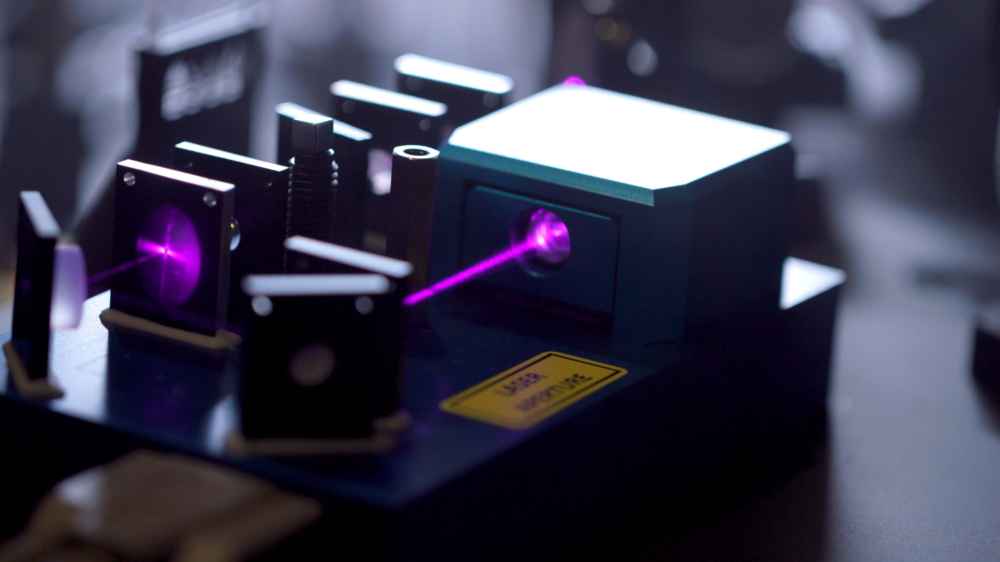

On the record
The Sound of Entanglement
arXiv:2509.08892, 2025
Pairs of entangled photons conduct a live audiovisual performance.
This is the experiment itself, a 3D scan of the breadboard we take on stage. Each flash is a real photon pair, measured in Linz Cathedral on 4 September 2024 and replayed at the pace it happened: pair 0, detected at 23:00:10.
Follow the beamThe Sound of Entanglement is a collaboration between physicists, computer scientists, a composer and a visual artist from Vienna, Linz and Innsbruck. We take a working quantum optics experiment on stage and let it conduct the music and the visuals, live.
A violet laser shines into a nonlinear crystal. Very rarely, about once in every hundred billion photons, one of them splits into two infrared photons, invisible to the eye and entangled in their polarisation.
Each photon is measured at its own station, called Alice or Bob, and each result is a coin toss that nobody can predict. Compared side by side, though, the two results agree more often than any classical mechanism allows.
The Bell value S measures that agreement. Anything classical, a human conductor or a computer included, stays at or below 2. Entangled photons can reach 2√2.
0.00 after 0 pairs from the premiere
With only a few pairs the value jumps around. It settles as the pairs add up, well above 2.
for two cathedral organs and entangled photons
After Anton Bruckner's Perger Präludium. With every photon pair, each organ receives one of four motifs. The two organists sit 30 metres apart and play what the photons choose.
for keys, bass, drums and entangled photons
The clicking of the motorised wave plates becomes the metronome, and a quantum random walk decides which of eight rooms the band moves into next.
for synthesisers, bass, drums and entangled photons
The Bell value sets the tempo: loose and noisy at first, steady once the correlations build up, and audibly slower when the experiment is switched to classical.
University of Innsbruck, Dies Academicus and MIP Alumni Day. Details to follow.
| Zirkus des Wissens JKU Linz | Indeterminate Apparatus | 2.51 | |
| CIVA Festival Belvedere 21, Vienna | Indeterminate Apparatus, premiere | 2.41 | |
| European Forum Alpbach | 8 Rooms | 2.29 | |
| Tech Forum Millstatt | 8 Rooms | 2.32 | |
| Science Diplomacy Summit Johns Hopkins University, Washington DC | 8 Rooms | 2.19 | |
| Apr–Oct 2025 | EXPO 2025 Osaka Austrian Pavilion | Film in the exhibition composing the future | — |
| Vienna Ball of Sciences City Hall | 8 Rooms, premiere | 2.62 | |
| Mariendom Linz | BruQner, in German | 2.43 | |
| Mariendom Linz Ars Electronica, antonbruckner2024 | BruQner, premiere, 3,000 people | 2.45 |
arXiv:2509.08892, 2025

19 minutes. The team in the days before the premiere in Linz Cathedral. Directed by Deniz Lindenberg, weitblickfilm, 2025.